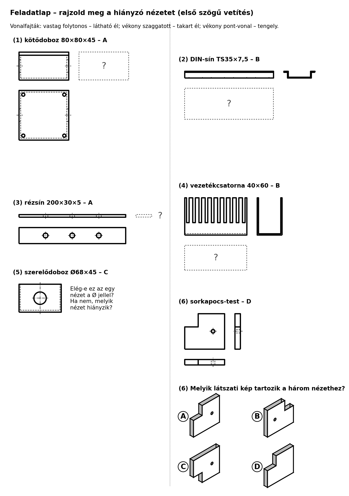
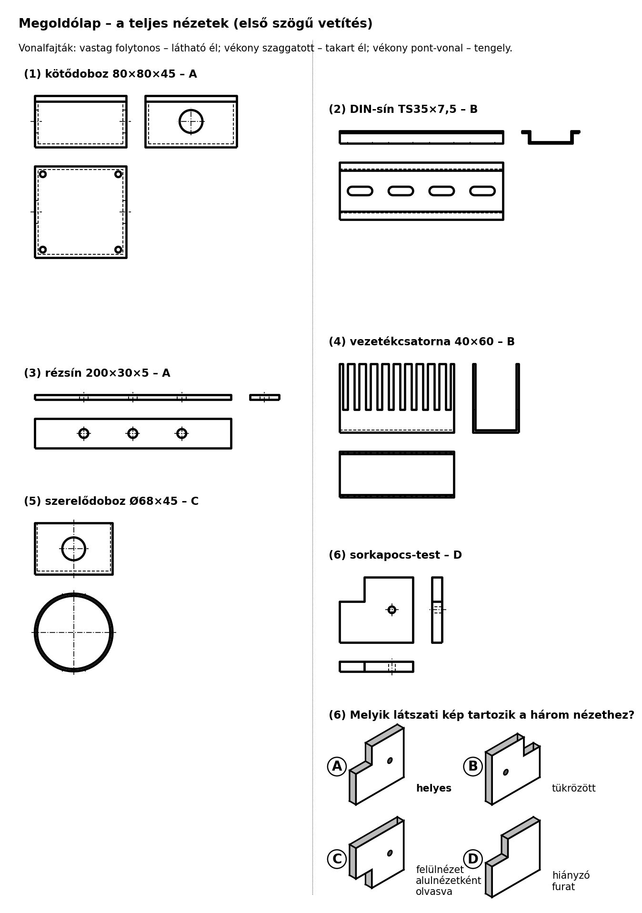

A kapcsolódó elmélet: tankönyv, 11.2 alfejezet.
Feladat. Adott egy 2 mm vastag acéllemezből hajlított tartókonzol. A talp szélessége 40 mm, hossza 60 mm. A függőleges szár magassága 30 mm. A talpon két darab 5 mm átmérőjű furat van, a szélektől 10 mm-re, középen. Készítsd el a három nézetet!
Megoldás.
Ellenőrzés. A három nézet összehasonlításakor a 60 mm-es hosszméret csak az elölnézeten és a felülnézeten látszik, a 40 mm-es szélesség csak a felülnézeten és az oldalnézeten, a 30 mm-es magasság pedig csak az elölnézeten és az oldalnézeten (a felülnézeten a szár 2 × 40 mm-es sávként jelenik meg, a magasság ott nem mérhető). Ez a vetületi rend ellenőrzése: minden alapméret pontosan két nézetben jelenik meg, és a két nézetben azonos hosszú.
A rajz a kész, hajlított tartót mutatja, a műhelyben viszont sík lemezt vágsz le. Hajlításkor a külső szál megnyúlik, a belső összenyomódik; a kettő között van a semleges szál, amelynek hossza nem változik (vékony lemeznél tanulási egyszerűsítéssel a vastagság közepén). A kiterített hossz a két egyenes szakasz és a semleges szál ívének összege. Egyetlen derékszögű hajlításnál, és külső méretekkel, lemezvastagsággal és belső hajlítási sugárral:
Példa. , , , :
Ellenőrzés: a külső méretek összege 90 mm, a kiterített hossz ennél valamivel kisebb, ez értelmes. A pontos hajlítási ráhagyást a hajlítógép vagy a gyártó táblázata adja (ellenőrizendő). A furatokat a hajlítás után jelöld, vagy a kiterítésen a semleges szálhoz viszonyítva.
Cél. Egy sérült vagy hiányzó szerelőlemez-pótlás elkészítéséhez felmérni a meglévő lemezt és arról vázlatot készíteni.
Eszközök és anyagok. Toll, ceruza (HB vagy 2H), radír, négyzetrácsos papír, mérőszalag vagy tolómérő, szögmérő.
Biztonsági korlát. A feladat tanműhelyi környezetre vagy jogosult oktató felügyeletére vonatkozik; ha a felmérendő alkatrész egy élő berendezés része, a munkavégzés előtt el kell végezni a feszültségmentesítés öt biztonsági szabályát: lekapcsolás, visszakapcsolás elleni biztosítás, feszültségmentesség ellenőrzése, földelés és rövidre zárás, szomszédos feszültség alatti részek lefedése.
Lépések:
Ellenőrzési pont. A kész vázlatról kérdezd meg egy társadat, hogy el tudná-e készíteni a tárgyat a rajz alapján. Ha nem, a rajz hiányos.
1. feladat (A) Nevezd meg a három leggyakrabban használt vetületi nézetet, és írd le, hogyan helyezkednek el egymáshoz képest a rajzlapon az európai vetítés szerint.
2. feladat (A) Rajzolj le egy 20 mm × 10 mm × 5 mm méretű téglatest három nézetét arányosan, ceruzával, négyzetrácsos papírra. Jelöld a méreteket!
3. feladat (B) Adott egy 50 mm hosszú, 20 mm széles, 3 mm vastag acéllemez. A lemez jobb oldali rövid élének közepéből egy 10 mm széles (a 20 mm-es szélesség irányában), 10 mm mély (a hossz irányában), a teljes vastagságon átmenő téglalap alakú bevágást (hornyot) martak ki. Készítsd el a három nézetét! Jelöld szaggatott vonallal a takarásban lévő éleket.
4. feladat (B) Magyarázd el, mi a különbség a vetületi nézet és a metszet között. Sorold fel, milyen vonaltípusokkal találkozol egy metszeti rajzon!
5. feladat (C) Egy szerelő egy hengeres szigetelőpersely rajzát nézi. Az elölnézet egy téglalap, a felülnézet egy kör. A rajzon csak ez a két nézet van. A persely belsejében egy furat van, amely nem megy át a perselyen (vakfurat). Hogyan jelölnéd ezt a két nézeten, hogy a gépész el tudja készíteni? Rajzold le vázlatosan!
6. feladat (D) Képzelj el egy zárt, csavarozott acél kapocsdobozt. Vázold fel, hogyan használnád az axonometrikus ábrázolást a doboz és a fedél összeszerelési sorrendjének bemutatására! Milyen előnye van a látszati képnek a vetületi rajzzal szemben a szerelő számára?
A villanyszerelő rajzolvasási helyzetei – dobozbevezetések, sínkiosztás, csatornaprofil, sorkapcsok – mind vetületi rajzok. Az alábbi feladatlapon hat egyszerűsített villamos tárgy van, kerek méretekkel, első szögű (európai) vetítésben; ahol kérdőjeles, szaggatott keret áll, oda a hiányzó nézet kerül. Rajzold meg négyzetrácsos papíron, a vonalfajtákra ügyelve, majd vesd össze a Megoldások végén lévő megoldólappal.

7. feladat (A) (1) Falon kívüli kötődoboz, 80 × 80 × 45 mm, 3 mm-es fallal, két szemközti oldalán Ø20 bevezetőnyílással, a fedél négy sarokcsavarral. Adott az elöl- és a felülnézet; rajzold meg a bal oldalnézetet!
8. feladat (A) (3) Rézgyűjtősín, 200 × 30 × 5 mm, három Ø9 furattal, 50 mm-es osztással. Adott az elöl- és a felülnézet; rajzold meg a bal oldalnézetet!
9. feladat (B) (2) DIN-sín TS35 × 7,5, 100 mm-es darab, a gerincében 15 × 5,2 mm-es hosszlyukakkal, 25 mm-es osztással (a hosszlyuk mérete és osztása gyártónként eltér – ellenőrizendő: gyártói adat). Adott az elölnézet és a profil (bal oldalnézet); rajzold meg a felülnézetet!
10. feladat (B) (4) Fedél nélküli vezetékcsatorna, 40 × 60 mm-es U-profil, 2 mm-es fal, az oldalfalakban felülről 40 mm mély, 4 mm széles rések 10 mm-es osztással (fésűs bordák). Adott az elölnézet és a profil; rajzold meg a felülnézetet!
11. feladat (C) (5) Süllyesztett szerelődoboz, Ø68 × 45 mm, elöl és hátul egy-egy Ø20 kitörőnyílással. Forgástestnél gyakran egy nézet és a Ø jel elég. Itt is elég? Ha nem, melyik nézet kell még, és miért?
12. feladat (D) (6) Egyszerűsített sorkapocs-test, 45 × 6 × 40 mm, a bal felső sarkában 15 × 15 mm-es bevágással és egy Ø4 furattal. Melyik látszati kép (A–D) tartozik a megadott három nézethez? A három hibás képnél nevezd meg, milyen olvasási hiba vezetne hozzá!
13. feladat (B) A 3. feladat anyagából (3 mm vastag acéllemez) L-alakú tartót hajlítasz: a külső méretek 50 mm és 20 mm, a belső hajlítási sugár 3 mm. Mekkora a kiterített hossz?
Önellenőrzés – válaszok: 1. Hamis. A felülnézet az elölnézet alá kerül. 2. Szaggatott vékony vonallal. 3. A metszet azonosítója, amely a metszősík nevét adja meg. 4. 45 fok. 5. Kört, amelynek középpontjában a tengelyvonalak kereszteződnek; a furatot koncentrikus körökkel jelöljük. 6. Mert két különböző alkatrész (két anyag) érintkezik a metszetben: azonos irányú sraffozásnál a határuk nem látszana, és a rajz egyetlen tömör darabnak mutatná őket. Az ellentétes irány (vagy eltérő sűrűség) jelzi, hogy a betét külön alkatrész.
Feladatok – megoldások:
Az elölnézet, felülnézet és bal oldalnézet. A felülnézet az elölnézet alá, a bal oldalnézet az elölnézet jobb oldalára kerül. A nézetek szélét nem szabad elforgatni, a vetületi kapcsolatot meg kell tartani.
Elölnézet: 20 mm széles, 10 mm magas téglalap. Felülnézet: 20 mm széles, 5 mm mély téglalap az elölnézet alatt. Bal oldalnézet: 5 mm széles, 10 mm magas téglalap az elölnézet jobb oldalán. A méretezés a téglalapok oldalaihoz igazodjon.
Elölnézet: 50×3 mm téglalap; a bevágás alja ( mm) takart él, ezért szaggatott függőleges vonal 3 mm magasan. Felülnézet: 50×20 mm téglalap, a jobb szél közepén 10×10 mm-es bevágás folytonos vastag vonallal. Bal oldalnézet: 20×3 mm téglalap; a bevágás két oldalfala (5 mm-re a középvonaltól) takart, ezért két, 3 mm magas szaggatott függőleges vonal.
A vetületi nézet a tárgy teljes külső képét mutatja. A metszet egy képzeletbeli vágás után mutatja a tárgy belsejét. A metszetnél a vágott anyagot sraffozással jelöljük, a vágósík nyomvonalát vékony pont-vonallal (a végein és a töréspontoknál vastagítva) és nyilakkal jelöljük, a metszetet betűkkel azonosítjuk. A metszetben a nem vágott mögöttes részek folytonos vonallal látszanak.
Elölnézet: A téglalap belsejében a zsákfurat (vakfurat) kontúrját szaggatott vonallal rajzoljuk, mert az elölnézetből nem látszik a belső furat. A furat tengelyét pont-vonallal húzzuk be. Felülnézet: A kör belsejébe egy kisebb koncentrikus kört rajzolunk folytonos vonallal, mert a furat felülről látható. A középpontot keresztező pont-vonalak jelzik a tengelyt.
A látszati (izometrikus) kép a dobozt a sarok felől, 30 fokos tengelyekkel rajzolja. Az összeszerelési sorrend bemutatásához a dobozt, a fedelet és a csavarokat együtt, esetleg szétrobbantott (exploded) ábrázolásban rajzoljuk. Előnye: azonnal látható a térbeli egymásra épülés, a szerelő egyetlen pillantással megérti a csavarok helyét és a fedél illesztését, míg a vetületi rajzokból ezt a térbeli kapcsolatot fejben kell összerakni.
Vetületi gyakorló feladatok – megoldások.

7. (1) A bal oldalnézet 80 × 45 mm-es téglalap; benne a fedél vonala (vastag, mert látható él), középen a közelebbi Ø20 nyílás látható körként, tengelykereszttel. A szemközti oldal nyílása pontosan mögötte van, ezért a takart kör egybeesik a láthatóval: a látható vonal elsőbbséget kap, szaggatott kört nem rajzolunk. A doboz üregét (3 mm-es fal) a két függőleges és az alsó szaggatott vonal mutatja.
8. (3) A bal oldalnézet 30 × 5 mm-es téglalap. A furatok tengelye függőleges, így oldalról a furatfalak takart élek: két függőleges szaggatott vonal 9 mm távolságra, a középen pont-vonalas tengellyel. A három furat egymás mögött van, ezért egyetlen pár szaggatott vonal látszik.
9. (2) A felülnézet 100 × 35 mm-es téglalap; a két perem belső éle (5 mm-re a szélektől) vastag vonal, alatta a peremek alatti falsík takart élként szaggatott (4 mm-re). A gerincben a négy hosszlyuk látható, lekerekített végű alakzat (15 × 5,2 mm), 25 mm-es osztással.
10. (4) A felülnézet 100 × 40 mm-es téglalap; a 2 mm-es falak belső éle hosszanti vastag vonal, a falak tetején minden résnél két rövid keresztirányú vonal jelzi a rés két oldalát. A csatorna alja felülről látszik, ezért ott takart él nincs.
11. (5) Nem elég. Egy nézet és a Ø jel csak a tisztán forgásszimmetrikus testnél elegendő. A kitörőnyílások helyét (elöl és hátul, nem körben) és azt, hogy csak a falat törik át, egy második nézet – a felülnézet – mutatja: két koncentrikus kör (Ø68 külső, Ø64 belső fal), a falban a nyílások takart élei. Az elölnézet köre önmagában átmenő furatot is jelenthetne.
12. (6) A helyes kép az A. B tükrözött: a bevágás a jobb felső sarokba került (a nézetet tükörképként olvasta). C: a bevágás alulra került – aki a felülnézetet (harmadik szögű szokás szerint) alulnézetnek olvassa, a 15 mm-es élvonalat alulra képzeli. D: hiányzik a furat – a felülnézet és az oldalnézet szaggatott (takart) vonalait figyelmen kívül hagyta.
13. (a pontos ráhagyás a gyártói táblázatból, ellenőrizendő).
Térlátás-gyakorló – a rögzített feladatok megoldása. 1. D (A, B és C: egy-egy kocka máshol van); 2. A (B: elölnézet, D: jobb oldalnézet a harmadik szögű vetítés szerint, C: egy kocka máshol); 3. A (első szögű elrendezés; B: az oldalnézet balra került, C: harmadik szögű elrendezés, D: a felülnézet fölülre került); 4. B (A: jobb oldalnézet, C: elölnézet, D: egy kocka máshol).
Példa. Egy téglatestet ábrázolunk. Elölnézet egy téglalap. Felülnézet egy téglalap az elölnézet alatt. A bal oldalnézet egy téglalap az elölnézet jobb oldalán. A három téglalapból a méretek ellenőrzésével egyértelműen azonosítható a tárgy.
Példa (metszet). Képzelj el egy hengeres villamos kapcsolószekrény-zsanért. Az elölnézetből nem látjuk, hogy a belső csap menetes-e vagy sem. Ha a felülnézetben a zsanér tengelyén át hosszirányú metszősík (A–A) van jelölve, az A–A metszetben a persely és a csap hosszmetszetét látjuk: a menet profilja itt látszik (a tengelyre merőleges keresztmetszet csak körgyűrűt mutatna, menetprofilt nem). A metszett persely sraffozott; a tömör csapot a szabályok szerint hosszmetszetben nem sraffozzuk (ellenőrizendő: MSZ EN ISO 128), az üres rész a csap körüli hézag.
A metszet szabályait egy jellegzetes villamos alkatrészen, a hengeres támszigetelőn (síntartón) is érdemes látni – ez a Szigetelőanyagok és műanyagok (tankönyv, 9.2) alfejezetben bemutatott támszigetelő rajzi párja. A test hőre keményedő műanyag, Ø30 × 40 mm; mindkét végébe fém betétet sajtoltak, benne M8-as, 12 mm mély menetes furattal; a felső furatba egy M8-as csavar van becsavarva. Az elölnézeten a betétek és a furatok csak szaggatott (takart) vonalként látszanak; a felülnézeten jelöljük ki a tengelyen átmenő A–A metszősíkot.
Gyakorlat (térlátás). A vetületi gondolkodás – térbeli tárgy ↔︎ három nézet – gyakorlással fejlődik. A HTML-kiadás térlátás-gyakorlója kockákból összerakott testeket generál, három szinten (A: 4–5 kocka; B: 6–8 kocka; C: 8–10 kocka, a nézeteken takart élekkel), háromféle feladattal: a három nézethez kell kiválasztani a négy látszati kép közül a helyeset; a látszati képhez és két nézethez a harmadikat; vagy azt a lapkiosztást, amely az első szögű (európai) vetítésnek felel meg. A hibás választásnál megmondja az okot – például hogy a választott kép a test tükörképe, vagy hogy a választott nézet a harmadik szögű (amerikai) vetítés szerinti jobb oldalnézet. A nyomtatott változat négy rögzített feladatot mutat; a megoldás betűjele a Megoldások végén található.
Mielőtt választasz, keresd meg a látszati képen a nyíllal jelölt elölnézeti irányt, és onnan „járd körbe” a testet: mi látszik felülről, és mi balról?